MacMolPlt Surfaces
The following surfaces are supported:
MacMolPlt supports several different surface types. You may have any
number and any combination of surface types active at once, though
having more than a couple of surfaces visible at once makes things
hard to see. One useful feature is to have multiple sufaces defined,
but only one visible at a time. You can then run through the surfaces
one by one. This makes it easy to highlite important orbitals, etc
when creating a presentation. To create surfaces open the Surfaces
window and click the Add button in the lower right corner. All
surfaces for a frame are listed in the menu near the top of
the Surfaces window.
The surfaces are divided into three main types: 1D spectrum lines,
2D contour maps, and 3D isosurfaces. Common to all surfaces are the options to
type in a label for the surface and an option to make the surface
visible/invisible. The purpose for making a surface invisible is so that you
can define the surface the way you want, and precalculate the grid and
contour(s) and then work on a seperate surface. Then when you want to show off
the surface to someone else simply make it
visible.
1D spectrum lines allow for the spectrum of surface values on a line between
two locations to be visualized. The endpoints of the line can be relocated
through both the Surfaces dialog and with the mouse after the surface is
created. To move with the mouse, click on the endpoint and drag it left and
right. Both endpoints can be moved at the same time by holding down the
Control/Command key while dragging. The endpoints can be moved in and out of
the scene by tapping (holding is not required) the Shift key. The surface
values can be visualized in one of two ways: a) as an embedded 2-D graph with
the x-axis spanning between the two endpoints and the y-axis representing
value intensity, or b) as a colored key ranging from blue at the minimum
surface value to red at the clamped maximum value.
There are several options common to all 2D surfaces such as the ability to
set contour colors and choose the plotting plane. The plotting plane can be
fixed to the plane of the screen, in which case it is changed as the molecule
is rotated, or the plane can be simply constant.
3D isosurfaces also have a few common features such as colors,
number of grid points, grid size, and the contour value. The grid
size referred to here is the size of the gridded volume (ie how far
out from the molecule does the grid go). If your surface gets chopped
off then try increasing this parameter.
The individual surface controls and options are listed below. For
help with the controls common to all surfaces (ie update etc) see the
Surfaces Window
description.
CreatingSurfaces:
To create a new surface bring up the Surface window for the
desired file. Then click the Add button in the lower right corner.
This will bring up the followin dialog:
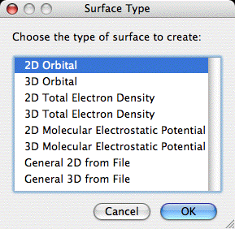
From this dialog click (or double click) on the desired surface
type to create a surface of that type. Note that all of the surface
types listed are not always available. The General 2D and 3D types
are always available, 2D and 3D orbitals are available as long as the
current file has an associated atomic basis set, and 2D and 3D TE
densities and MEPMaps are available when a file has a basis set,
eigenvectors (or MCSCF natural obitals) and thus has knowledge of the
MO occupation numbers.
2D Orbitals:
The 2D orbital surface is a 2D contour map showing the changes in
orbital density in the plotting plane. The 2D surface dialog and a
sample contour map created with it are shown below:
 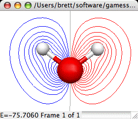
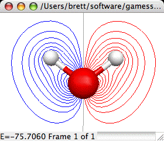
The important controls are:
- Choice of Orbital Set: You may choose AO's, any set of MO's available for the current frame. The selected set of orbitals is displayed in the first list below the obital set. The second list displays the AO list.
- Choice of MO (OLMO or LMO). If you select MO's or LMO's then you
need to select the MO (or LMO) to plot from this list. To select
the MO just click on it in the list (you may only select one at a
time). The information displayed here is the MO serial number, the
symetry of the orbital (if know and not shown above), and the
orbital energy or the occupation number (the occupation number is
shown above). To select energies or occupation numbers click the
little pop-up menu (the double arrow thing). When an MO is
selected its MO vector is listed in AO list.
- or Choice of AO if viewing AO's. The AO list provides the atom
serial number, element symbol, basis function type (S,
Px,...) and if viewing MO's the MO vector which lists
the contribution of each AO to the selected MO.
- If you are viewing AOs you can choose to view the AOs as
Cartesian Gaussians (the default) or as Spherical Harmonics (ie
5D, 7F, 9G).
- Number of grid points: Sets the courseness of the 2D grid. The
grid is a square grid determined by the size of display window.
Increase this value to achieve smoother contours.
- Max. # of contours: This value sets the number of contours
between zero and the Max. contour value. Thus the contour
increment is equal to the maximum contour value divided by the
number of contours.
- Maximum contour value: The maximum value to contour. Portions
of the gird above this value in magnitude will not be gridded.
This prevents the very tightly spaced contours around atom nuclei.
- Use Plane of Screen: When this box is checked the 2D plotting
plane will be fixed to the plane of the screen (and will be
recalculated as the molecule is rotated). When the box is uncheck the plane
is fixed relative to the molecule, and thus the plane moves as the
molcule rotates.
- Show Zero Contour: When checked a light gray contour will be
displayed where the grid changes sign. Note when plotting a nodal
plane you may get a lot of gray lines around the window due to
floating point "noise" in the almost identically zero grid values.
- Dash - Contours: If checked the contours of negative grid
values will be dashed to help distinguish them from the positive
contours when printed.
- Orbital Colors: Click on the + or - color box to set the color
for contours of that sign.
- Set Plane: Click to bring up a dialog allowing you to specify
the screen plane. Useful if the Use Plane of Screen box is
checked.
- Set PÉ (short for Set Parameters): Allows you to manually
define the number of grid points and the 2D plotting plane.
- Export: Exports the current grid to a file suitable to be read
in to the General 2D surface type for use in density diferences or
other specialized applications.
2D Total Electron Densities:
Creates a 2D contour map of the total electron density of a
molecule. This requires that the original file read in by MacMolPlt
contain basis set information and the natural orbitals (eigenvectors
or MCSCF natural orbitals) or the wavefunction such that the orbital
occupation information is also known. A sample dialog and its
corresponding output are shown below:
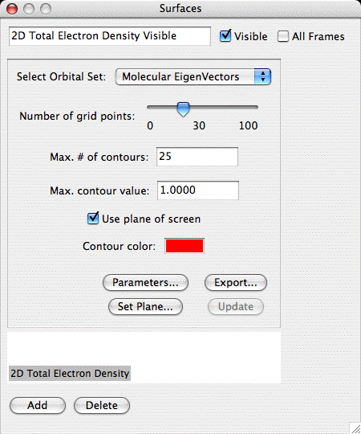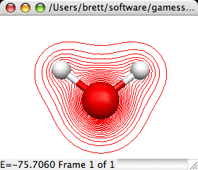
The important controls are:
- Choice of Orbital Set: You may choose any available set of MO's to base the TED calculation on. All available sets will be in the list, but only those where the orbital occupancies are known will be selectable.
- Number of grid points: Sets the courseness of the 2D grid. The
grid is a square grid determined by the size of display window.
Increase this value to achieve smoother contours.
- Max. # of contours: This value sets the number of contours
between zero and the Max. contour value. Thus the contour
increment is equal to the maximum contour value divided by the
number of contours.
- Maximum contour value: The maximum value to contour. Portions
of the gird above this value in magnitude will not be gridded.
This prevents the very tightly spaced contours around atom nuclei
(such as around the C nucleus in the sample).
- Use Plane of Screen: When this box is checked the 2D plotting
plane will be fixed to the plane of the screen (and will be
recalculated as the molecule is rotated). When the box is uncheck the plane
is fixed relative to the molecule, and thus the plane moves as the
molcule rotates.
- Contour Color: Click on the color box to set the color for
contours.
- Set Plane: Click to bring up a dialog allowing you to specify
the screen plane. Useful if the Use Plane of Screen box is
checked.
- Parameters: Allows you to manually define the number of grid
points and the 2D plotting plane.
- Export: Exports the current grid to a file suitable to be read
in to the General 2D surface type for use in density diferences or
other specialized applications.
Molecular Electrostatic Potential Map (MEPMap):
The Molecular Electrostatic Potential provides a computation of the
force a fictious infintesimal test charge would experience at each test
point. The computation actually omits the test charge so the result has units
of Hartree divided by charge. One could set the test charge to 1, but of course
such a value would in reality dramatically alter the electron distribution.
Creates a 2D contour map of the Molecular Electrostatic Potential
of a molecule. This requires that the original file read in by
MacMolPlt contain basis set information and the natural orbitals
(eigenvectors or MCSCF natural orbitals) or the wavefunction such
that the orbital occupation information is also known. IMPORTANT:
MEP's require calculating one-electron integrals which are much more
computationally expensive than the other types of calculation in
MacMolPlt. Thus don't expect to recalculate a surface in real time. A
sample dialog and its corresponding output are shown below:
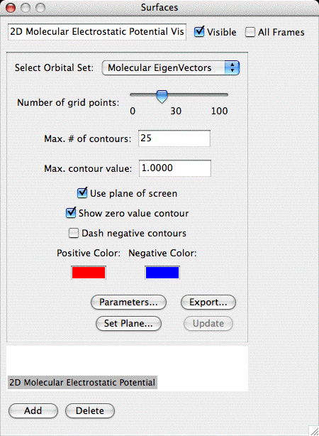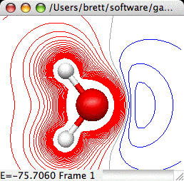
The important controls are:
- Choice of Orbital Set: You may choose any available set of MO's to base the MEP calculation on. All available sets will be in the list, but only those where the orbital occupancies are known will be selectable.
- Number of grid points: Sets the courseness of the 2D grid. The grid is a square grid determined by the size of display window. Increase this value to achieve smoother contours.
- Max. # of contours: This value sets the number of contours
between zero and the Max. contour value. Thus the contour
increment is equal to the maximum contour value divided by the
number of contours.
- Maximum contour value: The maximum value to contour. Portions
of the gird above this value in magnitude will not be gridded.
This prevents the very tightly spaced contours around atom nuclei
(such as around the C nucleus in the sample). NOTE: MEPMaps should
generally set a smaller Max Value since the interesting parts of
MEPs are much closer to 0.
- Use Plane of Screen: When this box is checked the 2D plotting
plane will be fixed to the plane of the screen (and will be
recalculated as the molecule is rotated). When the box is uncheck the plane
is fixed relative to the molecule, and thus the plane moves as the
molcule rotates.
- Contour Colors: Click on the color boxs to set the colors for
contours.
- Set Plane: Click to bring up a dialog allowing you to specify
the screen plane. Useful if the Use Plane of Screen box is
checked.
- Parameters: Allows you to manually define the number of grid
points and the 2D plotting plane.
- Export: Exports the current grid to a file suitable to be read
in to the General 2D surface type for use in density diferences or
other specialized applications.
General 2D Surface:
The general 2D surface is provided to allow users to read in any
aribitrary grid data. MacMolPlt will then contour and plot the data.
The file containing the grid data defines many parameters such as the
plotting plane, the number of grid points and the grid data. The
format for the 2D grid file is identical to the
2D
surface export format. The dialog is:
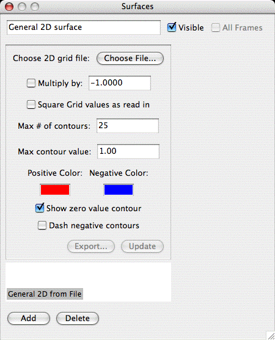
The important controls are:
- Choose File: Click to choose the file to read in the grid
data. Obviously you can't plot anything until you read in the grid
data from a file. Refer to the
2D Export format for
the format of this file. You may read in multiple files. The grids
will be summed together applying the next to settings to square or
subtract the next grid read in from file.
- Multiply by -1: When checked the next file read in will be
subtracted from the current grid.
- Square ...: When check the next grid read in will be squared
before adding to the current grid (useful for orbital densities).
- Max. # of contours: This value sets the number of contours
between zero and the Max. contour value. Thus the contour
increment is equal to the maximum contour value divided by the
number of contours.
- Maximum contour value: The maximum value to contour. Portions
of the gird above this value in magnitude will not be gridded.
This prevents the very tightly spaced contours around atom nuclei.
- Show Zero Contour: When checked a light gray contour will be
displayed where the grid changes sign. Note when plotting a nodal
plane you may get a lot of gray lines around the window due to
floating point "noise" in the almost identically zero grid values.
- Dash - Contours: Plots the - value contours as dashed lines.
- Orbital Colors: Click on the + or - color box to set the color
for contours of that sign.
3D Orbital Isosurfaces:
3D orbital isosurfaces are a 3 dimensional surface of constant
orbital density. Thus it can be thought of as a 3D representation of
one of the 2D contours. To view 3D isosurfaces you must use QuickDraw
3D (and thus have a PPC). The dialog and a sample are:
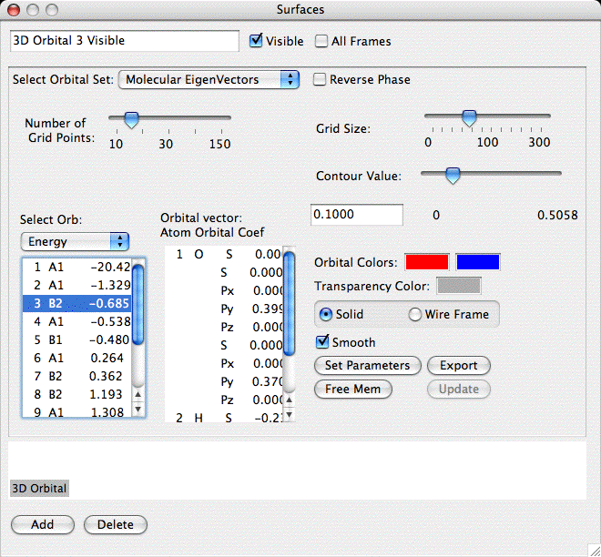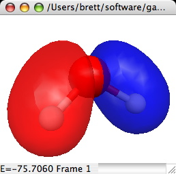
The important controls are:
- Choice of Orbital Set: You may choose AO's, MO's LMO's or OLMO's
depending on what is available. The selected set of orbitals is
displayed in the first list below the obital set. The second list
displays the AO list.
- Choice of MO (OLMO or LMO). If you select MO's or LMO's then you
need to select the MO (or LMO) to plot from this list. To select
the MO just click on it in the list (you may only select one at a
time). The information displayed here is the MO serial number, the
symetry of the orbital (if know and not shown above), and the
orbital energy or the occupation number (the occupation number is
shown above). To select energies or occupation numbers click the
little pop-up menu (the double arrow thing). When an MO is
selected its MO vector is listed in AO list.
- or Choice of AO if viewing AO's. The AO list provides the atom
serial number, element symbol, basis function type (S,
Px,...) and if viewing MO's the MO vector which lists
the contribution of each AO to the selected MO.
- If you are viewing AOs you can choose to view the AOs as
Cartesian Gaussians (the default) or as Spherical Harmonics (ie
5D, 7F, 9G).
- Number of grid points: Sets the courseness of the 3D grid. The
grid is a 3D cube determined by the size of the molecule and the
Grid Size parameter described below. The Grid size depends on the
size of this parameter cubed. Thus the memory required to hold the
grid and the time required to compute the grid increase as a cubic
function. Increase this value to achieve smoother contours.
- GridSize: This is a scaling parameter for the size of the 3D
volume. Increasing this parameter will spread the grid over a
larger space father from the molecules. Usually you will only need
to increase this if your desired contour is being chopped off at
the edge of the volume.
- Contour Value: Selects the value to use when contouring the
grid (both + and -). The slider selects a value between 0 and the
maximum grid value. The maximum grid value is printed out below
the right end of the slider (0.2996 in the example). The actual
contour value is printed out directly below the words Contour
Value and is editable (0.1325 in the example). Thus you can
specify any contour value you like by typing it in to the edit
field.
- Orbital Colors: Click on the + or - color box to set the color
for contours of that sign.
- Surface Transparency: The amount of light allowed to pass through
the surface (only applies to solid surfaces). This is a value between
0 and 100 with 0 being completely opaque and 100 being fully transparent.
- Solid/Wireframe Surface: Choose solid to see a surface such as
the example. Click Wireframe to see a surface consisting of lines
connecting the actual grid values (thus you can see through the
surface). If a solid surface is chosen then you can choose to
smooth out the surface as in the example.
- Free Mem.: Clicking this button will release the memory
occupied by the 3D grid. This is recommended once you have
completed tweaking the surface values such that you will not
change any other surface parameters. Once freed the grid must be
recalculated before updating the contour.
- Set Parameters: Allows you to manually
define the number of grid points and the 3D plotting volume.
- Export: Exports the current grid to a file suitable to be read
in to the General 3D surface type for use in density diferences or
other specialized applications.
3D Total Electron Density:
Creates a 3D isosurface of the total electron density of a
molecule. This requires that the original file read in by MacMolPlt
contain basis set information and the natural orbitals (eigenvectors
or MCSCF natural orbitals) or the wavefunction such that the orbital
occupation information is also known. A sample dialog and its
corresponding output are shown below:
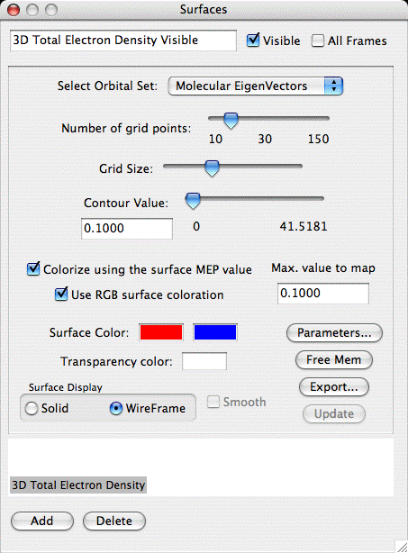
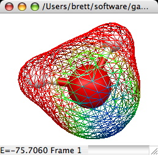
The important controls are:
- Choice of Orbital Set: You may choose any available set of MO's to base the TED calculation on. All available sets will be in the list, but only those where the orbital occupancies are known will be selectable.
- Number of grid points: Sets the courseness of the 3D grid. The
grid is a 3D cube determined by the size of the molecule and the
Grid Size parameter described below. The Grid size depends on the
size of this parameter cubed. Thus the memory required to hold the
grid and the time required to compute the grid increase as a cubic
function. Increase this value to achieve smoother contours.
- GridSize: This is a scaling parameter for the size of the 3D
volume. Increasing this parameter will spread the grid over a
larger space father from the molecules. Usually you will only need
to increase this if your desired contour is being chopped off at
the edge of the volume.
- Contour Value: Selects the value to use when contouring the
grid (both + and -). The slider selects a value between 0 and 1.
The maximum grid value is printed out below the right end of the
slider (49.4 in the example). The actual contour value is printed
out directly below the words Contour Value and is editable (0.1325
in the example). Thus you can specify any contour value you like,
including values larger than 1, by typing it in to the edit field.
- Colorize by MEP value: When checked the molecular
electrostatic potential (MEP) value at each point on the surface
is calculated and the color varied depending on this value.
- Use RGB surface coloration. The surface color is determined using the fairly common scheme of blue for negative, green for zero and red for positive values. This tends to produce a quite colorful image with constant color intensity. When turned off the colors below are used and the intensity is scaled to the relative magnitude of the MEP value with black for zero.
- Maximum MEP value: Sets the maximum magnitude of a MEP value
to colorize (values above this setting are simply set to the
maximum). The colors are varied between 0 and the this setting.
- Contour Colors: Click on the color box to set the color for the contour. The left box sets the color for the single isosurface when not color mapping the MEP. When color mapping is active this is the color mapped to the positive MEP values. The right box gives the color for the negative MEP values (- means atractive to a positive charge). The color mapping simple varies the intensity of the color based on the MEP value, black for 0 up the bright red for + and blue for - in the example. If you choose to colorize using RGB values these boxes will not be available.
- Surface Transparency: The amount of light allowed to pass through
the surface (only applies to solid surfaces). This is a value between
0 and 100 with 0 being completely opaque and 100 being fully transparent.
- Solid/Wireframe Surface: Choose solid to see a surface such as
the example. Click Wireframe to see a surface consisting of lines
connecting the actual grid values (thus you can see through the
surface).
- Free Mem.: Clicking this button will release the memory
occupied by the 3D grid. This is recommended once you have
completed tweaking the surface values such that you will not
change any other surface parameters. Once freed the grid must be
recalculated before updating the contour.
- Parameters: Allows you to manually define the number of grid
points and the 3D plotting volume.
- Export: Exports the current grid to a file suitable to be read
in to the General 3D surface type for use in density diferences or
other specialized applications.
3D Molecular Electrostatic Potential Map
(MEPMap):
Creates a 3D isosurface of the Molecular Electrostatic Potential
of a molecule. This requires that the original file read in by
MacMolPlt contain basis set information and the natural orbitals
(eigenvectors or MCSCF natural orbitals) or the wavefunction such
that the orbital occupation information is also known. A sample
dialog and its corresponding output are shown below:
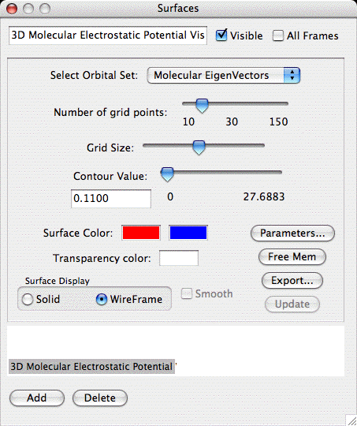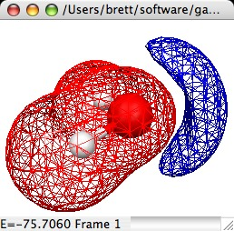
The important controls are:
- Choice of Orbital Set: You may choose any available set of MO's to base the MEP calculation on. All available sets will be in the list, but only those where the orbital occupancies are known will be selectable.
- Number of grid points: Sets the courseness of the 3D grid. The
grid is a 3D cube determined by the size of the molecule and the
Grid Size parameter described below. The Grid size depends on the
size of this parameter cubed. Thus the memory required to hold the
grid and the time required to compute the grid increase as a cubic
function. Increase this value to achieve smoother contours.
- GridSize: This is a scaling parameter for the size of the 3D
volume. Increasing this parameter will spread the grid over a
larger space father from the molecules. Usually you will only need
to increase this if your desired contour is being chopped off at
the edge of the volume.
- Contour Value: Selects the value to use when contouring the
grid (both + and -). The slider selects a value between 0 and the
maximum grid value. The maximum grid value is printed out below
the right end of the slider (0.2996 in the example). The actual
contour value is printed out directly below the words Contour
Value and is editable (0.1325 in the example). Thus you can
specify any contour value you like by typing it in to the edit
field. NOTE: You will likely find interesting contours lie between
0 and 0.1.
- Contour Colors: Click on the color boxs to set the color sfor
the contour.
- Surface Transparency: The amount of light allowed to pass through
the surface (only applies to solid surfaces). This is a value between
0 and 100 with 0 being completely opaque and 100 being fully transparent.
- Solid/Wireframe Surface: Choose solid to see a surface such as
the example. Click Wireframe to see a surface consisting of lines
connecting the actual grid values (thus you can see through the
surface).
- Free Mem.: Clicking this button will release the memory
occupied by the 3D grid. This is recommended once you have
completed tweaking the surface values such that you will not
change any other surface parameters. Once freed the grid must be
recalculated before updating the contour.
- Parameters: Allows you to manually define the number of grid
points and the 3D plotting volume.
- Export: Exports the current grid to a file suitable to be read
in to the General 3D surface type for use in density diferences or
other specialized applications.
General 3D Surface:
The general 3D surface is provided to allow users to read in any
aribitrary grid data. MacMolPlt will then contour and plot the data.
The file containing the grid data defines many parameters such as the
number of grid points and the grid data. The format for the 3D grid
file is identical to the 3D
surface export format. The dialog is:
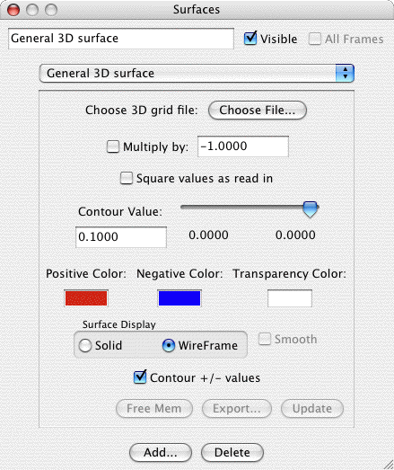
The important controls are:
- Choose File: Click to choose the file to read in the grid
data. Obviously you can't plot anything until you read in the grid
data from a file. Refer to the
3D Export format for
the format of this file. You may read in mutliple files with the
grids being summed up to create a density difference or other
specialized effect.
- Multiply by -1: When checked the next file read in will be
subtracted from the current grid.
- Square ...: When check the next grid read in will be squared
before adding to the current grid (useful for orbital densities).
- Contour Value: Selects the value to use when contouring the
grid (both + and -). The slider selects a value between 0 and the
maximum grid value. The maximum grid value is printed out below
the right end of the slider (0.2996 in the example). The actual
contour value is printed out directly below the words Contour
Value and is editable (0.1325 in the example). Thus you can
specify any contour value you like by typing it in to the edit
field.
- Orbital Colors: Click on the + or - color box to set the color
for contours of that sign.
- Surface Transparency: The amount of light allowed to pass through
the surface (only applies to solid surfaces). This is a value between
0 and 100 with 0 being completely opaque and 100 being fully transparent.
- Solid/Wireframe Surface: Choose solid to see a surface such as
the example. Click Wireframe to see a surface consisting of lines
connecting the actual grid values (thus you can see through the
surface).
- Contour +/- values: Normally this is checked such that you get
both + and - contours at the same time as with orbitals. However,
if uncheck it then you may contour only the exact contour value
you specify instead of both + and - values of that magnitude.
- Free Mem.: Clicking this button will release the memory
occupied by the 3D grid. This is recommended once you have
completed tweaking the surface values such that you will not
change any other surface parameters. Once freed the grid must be
recalculated before updating the contour.
1D Total Electron Densities:
Creates a linear sampling of total electron density between two locations.
The important controls are:
- Number of Grid Points: Controls the rate of regular sampling between the two endpoints.
- Clamp: Maximum allowed density value. All densities higher than this value will be clamped to this value.
- Scale: Factor by which to scale density values when mapping to physical offset from sampling line.
- Endpoint 1: Location at which to start sampling.
- Endpoint 2: Location at which to end sampling.
Density Differences:
Density differences are not as automated as other surface types in
MacMolPlt. There are a series of steps to creating density difference
surfaces of either total electron densities or orbital densities.
Basically each part of the density difference must be created
individually and export to seperate files. Then the difference
density is created using either the General 2D or 3D surface and
reading in the individual files. The key element in creating the
individual surfaces is that they must all have the plane or 3D volume
defined exactly the same. To make this possible each surface type has
a Set Parameters button (some are abrieviated) to copy and paste the
important parameters defining the plane or 3D cube.